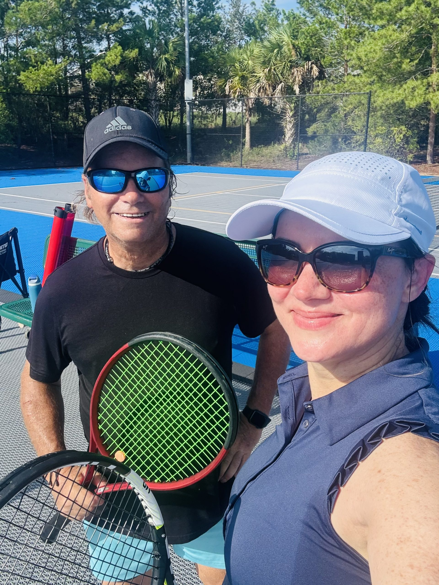
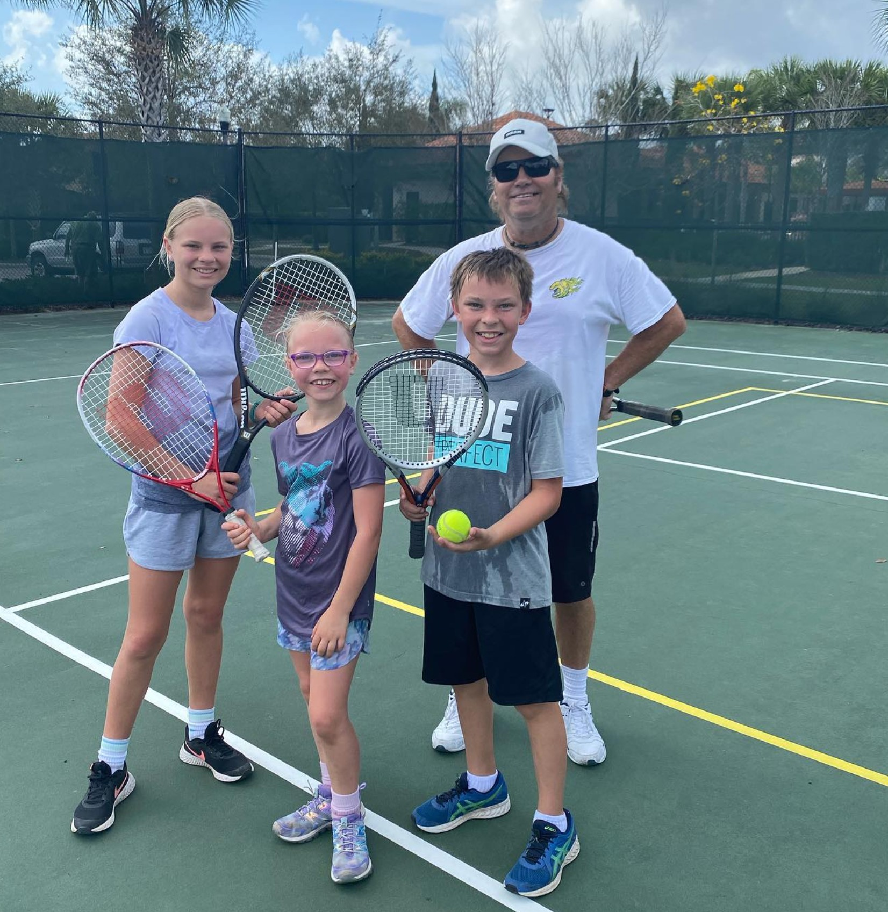

For about five months a year, tennis in Florida is a fight with the heat.
You know the drill. It's in the 90s with the humidity on top of it. A storm rolls in most afternoons. So you play at 7 in the morning or after 6 at night, and you still go home soaked.
Then October shows up, and things change.
The air dries out. The highs drop into the 80s, then the 70s. You can walk onto a court at 10 in the morning and actually enjoy it. This is the best stretch of the year to be on a tennis court in Central Florida. And if you've been thinking about starting, or coming back, this is the time.
Summer tennis
- Highs in the 90s, plus the humidity
- Storms most afternoons
- Play early or late, or don't play
Fall tennis
- Highs in the 70s and 80s, drier air
- Mornings and evenings are great
- Midday is doable again
Why fall is the best time to start
Here's the thing about learning tennis in the summer heat. You spend half your energy just getting through it.
New players get tired fast. When you're tired, your feet stop moving, your swing gets sloppy, and the ball goes everywhere. It's hard to learn anything that way. And a lot of people decide tennis isn't for them after a couple of rough, sweaty sessions, when really it was the weather.
In the fall, you get to spend that energy on the actual tennis. You can hit for an hour and still have something left. You can focus on what we're working on instead of counting the minutes until the water break.
And that matters most early on. The first few weeks decide whether someone sticks with it. I'd much rather those weeks feel good.
Coming back to the game?
A lot of adults played in high school or college, put the racquet down for twenty years, and have been meaning to pick it back up. Fall is a good time to do it.
Just ease in. Your timing will come back faster than you think. Your legs and shoulder take longer. So start with an hour of hitting, not three sets. Warm up longer than you used to. Give it a few weeks before you play a real match.
You'll be surprised what's still in there.

Bring the whole family
Summer makes family tennis tough. By the time the kids are up and everyone has sunscreen on, it's already too hot.
Fall weekends are different. A Saturday morning hit with your kids is actually pleasant now. Nobody has to be good. Parents and kids can learn together, and it's a lot easier to keep everyone smiling when nobody's melting.

What changes on the court in the fall
Fall isn't perfect. A few things are different, and it helps to know them.
It gets windy. Cold fronts start moving through, and some days the wind really picks up. Don't fight it. Aim higher over the net so the ball has room for error. Use a little more spin to bring the ball down. And on your serve, toss a little lower so the wind has less time to push the ball around.
It gets dark earlier. Clocks go back on November 1st. That 6 p.m. slot that worked all summer may be in the dark soon. Some courts have lights and some don't, so check before you book an evening.
Mornings can be cool. Wear a layer you can take off after the warm-up. Cold muscles need a little more time to get going, so don't skip it.
You still need water. October can still hit the high 80s. Cooler doesn't mean cool. Bring a full bottle anyway.
On a windy day, catch any toss the wind grabs. You're allowed to start over, and it beats swinging at a ball that moved a foot.
Don't wait for January
Every January, a bunch of people decide this is the year they take up tennis.
If you start now, by January you'll already have a few months behind you. You'll have a forehand you trust and a serve that goes in most of the time. You'll be past the awkward part.
I won't pretend anyone gets good in one season. Tennis takes a while. But fall through spring is the best stretch Florida gives us, and it's starting right now.
Grab a racquet. Come find out.
Ready to start this fall?
Coach Tommy offers private and small-group lessons in Clermont, Winter Garden, Windermere, and throughout Central Florida — for juniors, adults, and complete beginners.
Book a Lesson or call/text (407) 259-0774